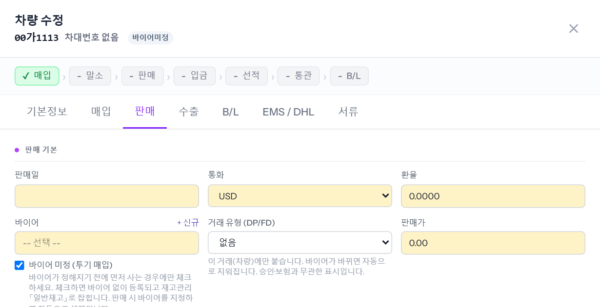
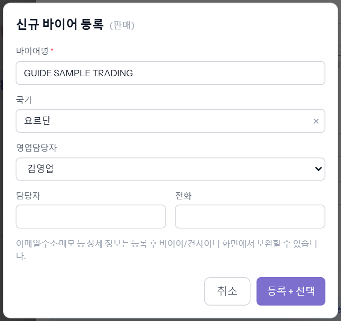
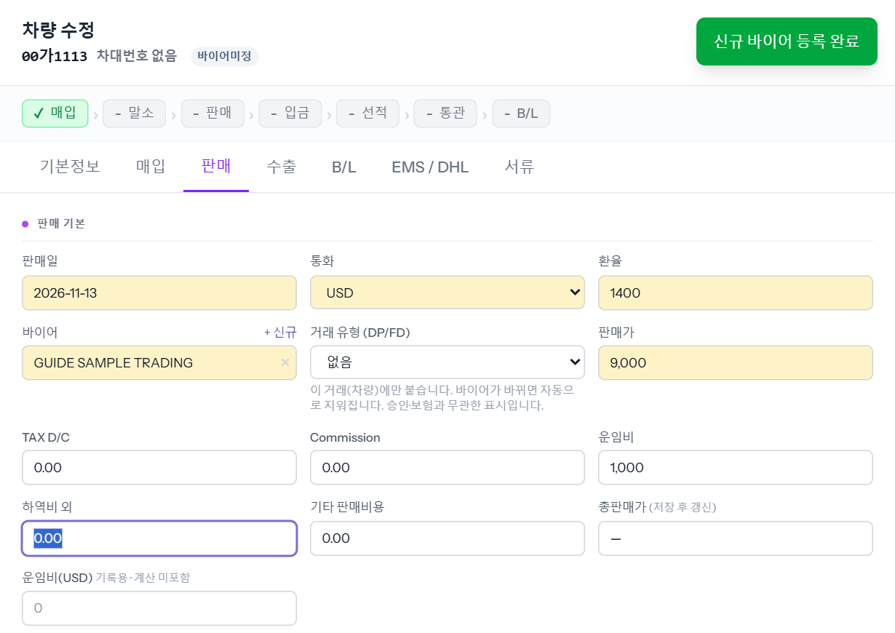
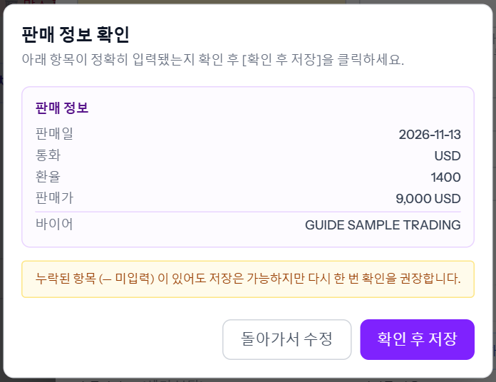
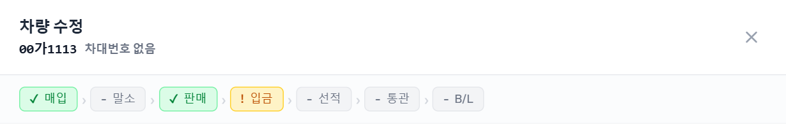
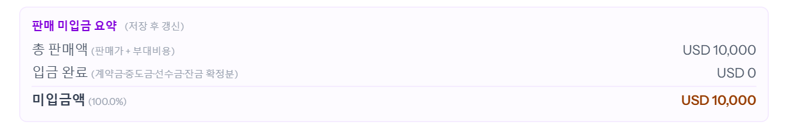
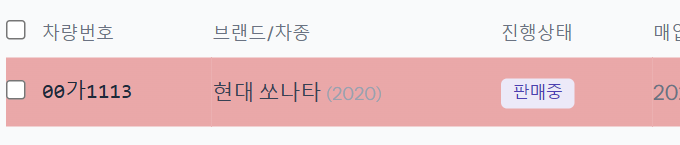
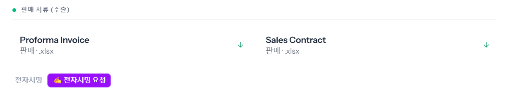

차를 살 바이어가 정해지면 판매 탭에 바이어·통화·환율·판매가를 넣고, 서류 탭에서 인보이스를 뽑는 단계입니다. 관리가 합니다.
차량 관리에서 차를 눌러 열고 「판매」 탭을 누릅니다. 예시 차량은 바이어 없이 등록했던 차라 「바이어 미정 (투기 매입)」에 체크돼 있습니다.

이미 등록된 바이어면 「바이어」 칸을 눌러 이름으로 찾아 고릅니다. 처음 거래하는 바이어면 칸 오른쪽 위 [+ 신규]를 누릅니다.

[등록 + 선택]을 누르면 「신규 바이어 등록 완료」가 뜨고 바이어 칸에 바로 들어갑니다. 바이어가 들어가면 「바이어 미정」 체크 칸은 사라지고, 저장할 때 자동으로 풀립니다.
이메일·주소는 이 창에 없습니다. 인보이스에 바이어 주소·전화·이메일이 찍히므로, 필요하면 왼쪽 메뉴 「바이어」에서 그 바이어를 열어 채웁니다.
예시는 판매일 2026-11-13, USD, 환율 1,400, 판매가 9,000, 운임비 1,000입니다.

판매가를 넣으면 바이어가 반드시 있어야 합니다. 「바이어 미정」 상태로는 판매가를 저장할 수 없습니다.
판매일·통화·환율·판매가·바이어를 한 번 더 보여 줍니다. 맞으면 [확인 후 저장]입니다.

차를 다시 열면 창 위 진행 줄이 「✓ 매입 › ✓ 판매 › ! 입금」으로 바뀝니다. 이제 받을 돈이 남았다는 뜻입니다.

판매 탭의 「총판매가」와 아래 「판매 미입금 요약」에 받을 돈이 계산됩니다. 예시는 총 판매액 USD 10,000(판매가 9,000 + 운임비 1,000), 입금 완료 USD 0, 미입금액 USD 10,000 (100.0%)입니다.

목록에는 진행상태 「판매중」으로 올라오고, 아직 못 받은 비율만큼 줄 배경이 붉게 칠해집니다. 차량번호 옆 「바이어미정」 표시는 사라집니다.

「서류」 탭의 「판매 서류 (수출)」에서 Proforma Invoice를 누르면 엑셀 파일이 바로 내려받아집니다(예시: Invoice_00가1113_20261113.xlsx). 옆의 Sales Contract는 판매계약서입니다.

인보이스에는 판매일, 인보이스 번호, 바이어 이름·주소·전화·이메일, 환율, 차량번호(영문 표기)·브랜드·차종·차대번호, 판매가, 운임비가 자동으로 들어갑니다. 비어 있는 정보(예: 차대번호, 바이어 주소)는 인보이스에도 빈칸으로 나오므로, 채운 뒤 다시 뽑습니다.
※ 인보이스에는 회사 정보가 인쇄돼 있어 그림을 싣지 않았습니다.